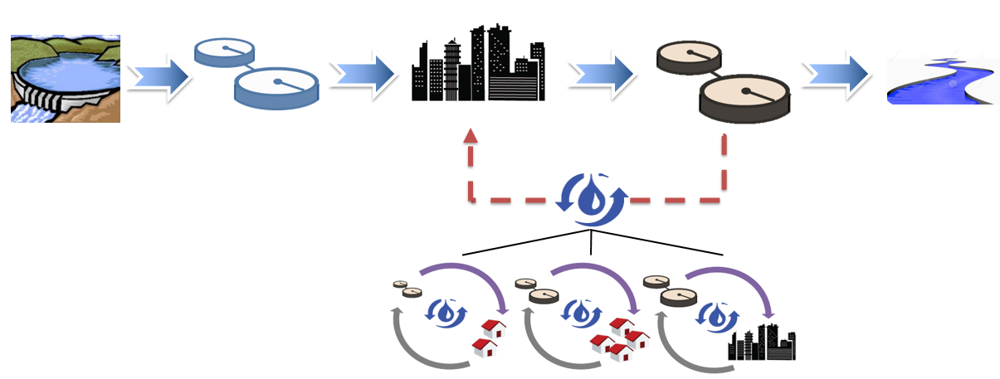
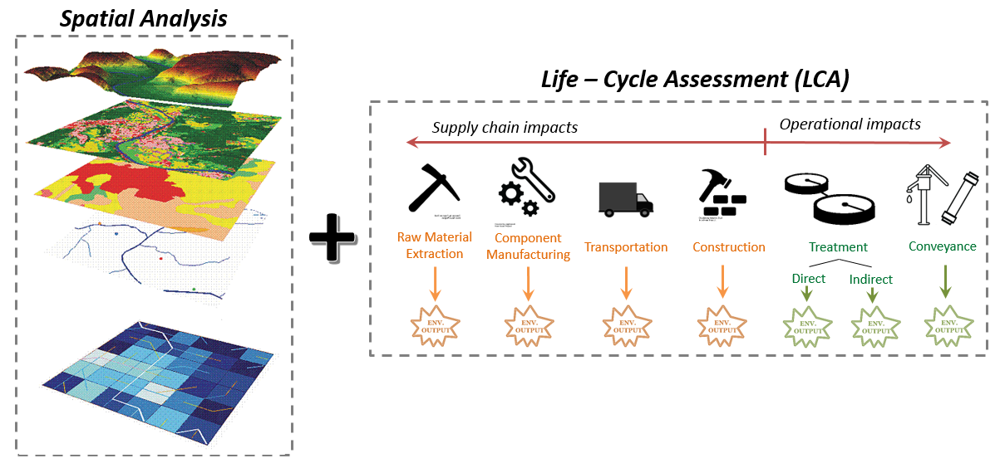

A modeling framework for decentralized nutrient management


Olga Kavvada is a phD Student in Civil and Environmental Engineering at U.C. Berkeley. Her work involves systems-level analysis to improve our usage of energy and water resources under the constraints of climate change.
William A. Tarpeh is a phD Student in Civil and Environmental Engineering at U.C. Berkeley. His research involves creating innovative technologies for nitrogen recovery through urine separation.
Dr. Kara Nelson is a professor of Civil and Environmental Engineering at U.C. Berkeley. Her teaching and research address innovative strategies to increase the sustainability of urban water infrastructure around the world. She leads the engineering research thrust at ReNUWIt.
Dr. Arpad Horvath is a professor of Civil and Environmental Engineering at UC Berkeley. His teaching and research involves life-cycle environmental and economic assessment of products, processes, and services to answer important questions about civil infrastructure systems and the built environment.
Do you have questions or comments? Please contact Olga Kavvada: @okavvada or email okavvada@gmail.com.
{kind=link}
{kind=link}